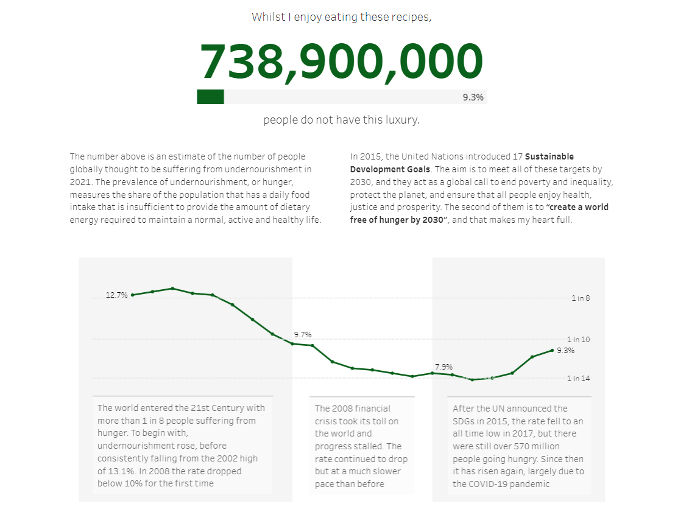
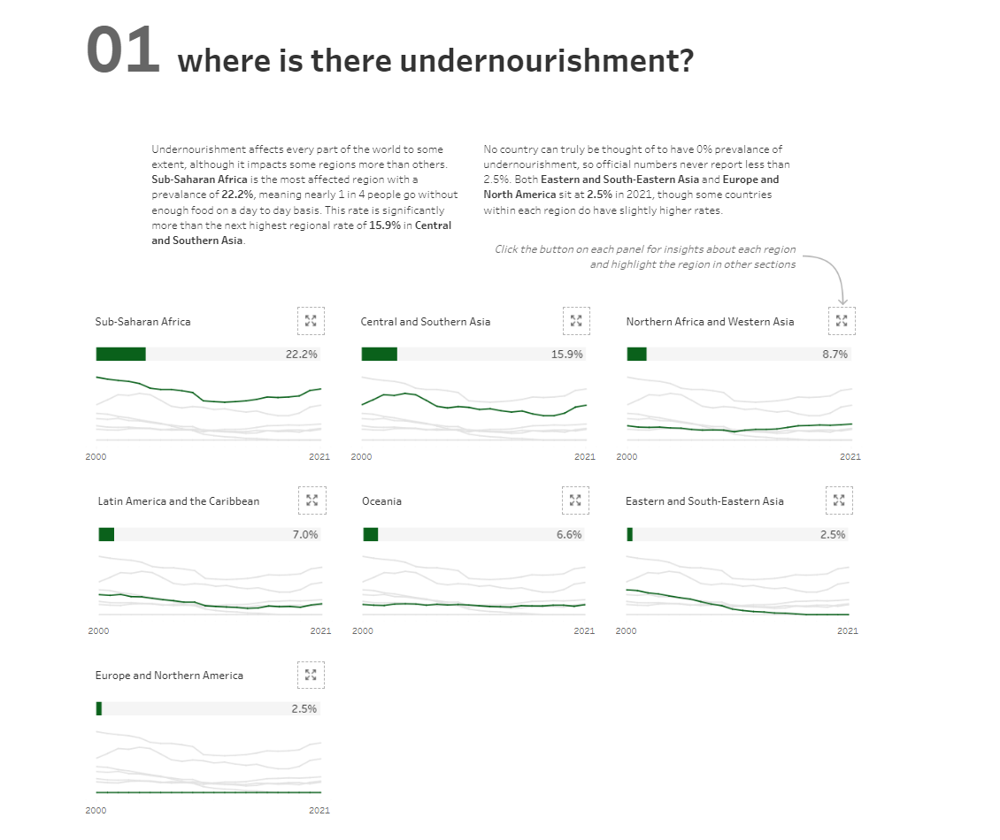
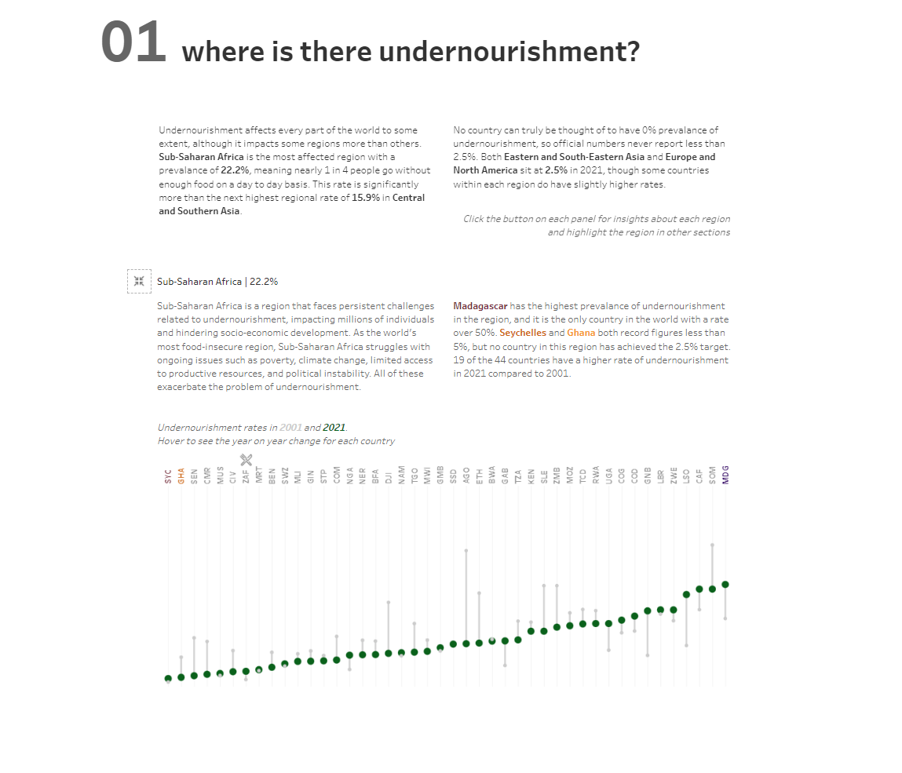
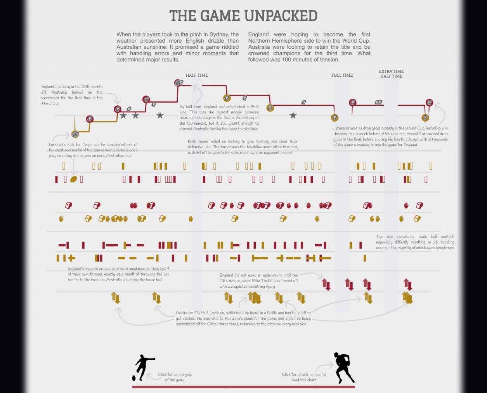
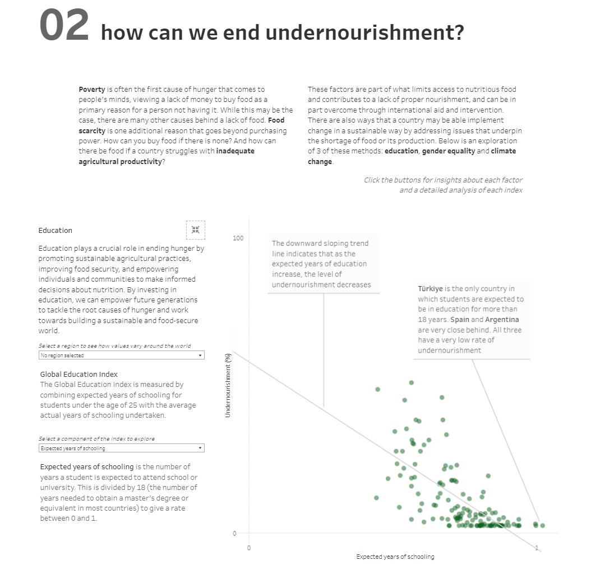

As I write this, I am anticipating that you already have an idea and the firm foundations of a dataset for your IronViz entry. In my last blog, I wrote about how to come up with an idea that will give you a greater chance of success – take a look if you’re not sure where to start! It’s also important that you don’t panic if you’ve not got an idea yet. This year, Tableau have given you an extra week to work on your submission by releasing the theme a week early. Make full use of this time – just make sure you submit by the end of October!
This week I want to talk about analysis. You have your data, and now we need to add the analytical value to it. How do you do that in a way that gets you points for IronViz? A good place to start is the judging criteria that Tableau released last year. I’ll try and break these down as we go, referring to my last 2 entries to IronViz. My 2023 entry about England’s Rugby World Cup triumph in 2003 was given a score of 4.3/5, and my Love for Food entry in 2024 achieved a score of 4.89/5. Let’s try and unpick how I managed that.

Go deep into your data and topic
To hit high marks in this aspect you will need to go deep into your data. There are several ways to do this. One is to start with a very high level overview of your data. The analysis for my 2024 entry began with a timeline showing the global rate of undernourishment. It then moved deeper into regions, and gave you the option to go deeper again to a country level for a region of your choice. Diving into the data gradually in this way demonstrates your ability to transition from a “bird’s eye view” to a “worm’s eye view”, getting closer to the nitty gritty of the data. Why does the data present the way it does at that very high level? In the case of my entry – what sat behind that global level view? There was a lot of disparity between the regions, and even within the regions. Test the data to see how deep you can go.



Another way is to explore aspects of your story that may not be obvious at the beginning. Let’s look at the timeline from my 2023 entry. I’ve not seen anywhere that does a timeline analysis of a sporting event to this level of detail. Here I have not only included details of the score as the game progressed, but also each time the ball was kicked, any penalties or fouls, set pieces, and substitutions. This created a much more comprehensive view of the match and some trends begin to appear. For example, towards the end of the first half we see Australia kicking possession away several times in quick succession. What followed soon after was an England try. Then, in the remainder of the game, Australia don’t try this same strategy again. Without overlaying this information, it would almost certainly be lost.

Spell out your analysis
The main difference that I found between the IronViz qualifying round and the final is how your user sees your visualisation. In the final, I was there to present my findings and talk through my analysis. That’s not at all the case with the qualifier. Anyone could look at your entry at any time and it is important that they can understand it and glean the insights from it. It is therefore incredibly important that you spell out your analysis. In the image above I have used an overlay to display text analysis of the game on top of the timeline. This layer can be hidden to allow the user to explore for themselves, or shown to guide them through and demonstrate my expert knowledge of the subject.
One thing that I learnt from this is the importance of accessibility. Using this overlay meant that the text was included in an image and couldn’t be read by a screen reader meaning it wasn’t accessible for all users. To overcome this, in 2024 I used annotations directly on the chart. These couldn’t be hidden but I decided accessibility was more important. These annotations took a long time to set up, but played a key part in ensuring that I hit the brief for analysis and I believe drove my score up higher than it would otherwise have been.

Use as many of Tableau’s features as you can
The judging criteria specifies that analysis should be produced mostly in Tableau and highlight a broad range of Tableau capabilities. There are a lot of other tools out there that can do a wide range of analysis, but for the purposes of IronViz if it can be done in Tableau it should be done in Tableau. In 2022 I conducted a sentiment analysis on text data in R which left very little analysis to actually be done in Tableau which I think negatively impacted my score that year. Think about every calculation that you want to do with your data and utilise the power of Tableau as far as possible. There are some great features that are heavily underutilised, such as predictive models and clustering, that will really help to demonstrate your ability to use the tool effectively.
Another way to hit this requirement is through the other options in the analysis pane on a worksheet. Add reference lines to increase the value of your analysis. Highlight the minimum, maximum, or average values using these lines. You can also use reference bands to group your data and highlight sections as I did in that global trend line in my 2024 entry (pictured above).
Finally, use the dashboard actions that can help to offer increased interactivity and drive up engagement. Not everything has to be visible at the same time, and dynamic zone visibility is a great way to encourage a deeper exploration of your dashboard. Including somethings that are hidden beneath the surface will make your analysis appear to go deeper because the viewer is having to drill in deeper themselves. I’ll cover this idea more in a couple of weeks when we look at the design element of an IronViz entry.
//
Analysis should be the bread and butter of everything that we do with Tableau, but it can be so hard to get it right. Hopefully this blog has given you some pointers and things to think about. Consider implementing these techniques into your own visualisation over the next week. See how deep your analysis can go, and keep asking questions of your data. You can always add more data if you need to – your dataset isn’t final until you submit.
If you would like feedback on your analysis, or just to chat things through regarding your entry please reach out. I would be more than happy to help you create a visualisation that you can be truly proud of!
Take care // Chris